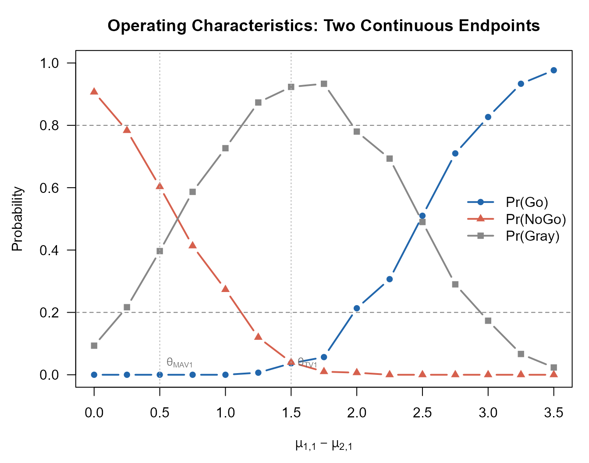
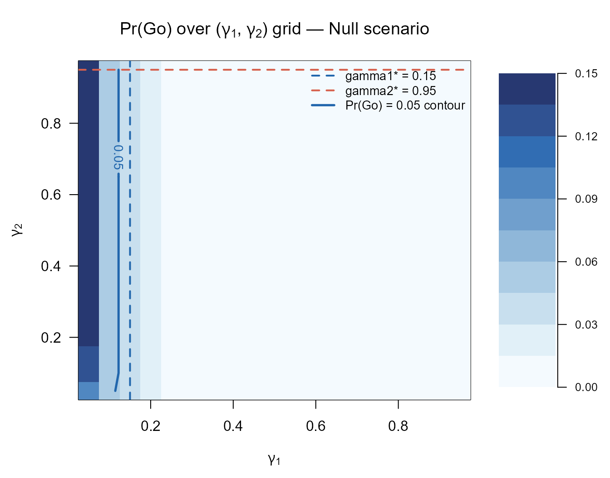
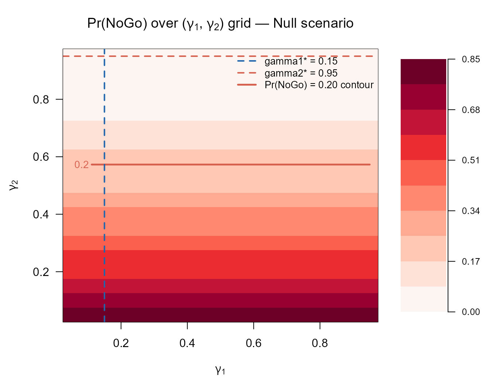

Motivating Scenario
We extend the single-endpoint RA trial to a bivariate design with two co-primary continuous endpoints:
- Endpoint 1: change from baseline in DAS28 score
- Endpoint 2: change from baseline in HAQ-DI (Health Assessment Questionnaire – Disability Index)
The trial enrolls patients per arm (treatment vs. placebo) in a 1:1 randomised controlled design.
Clinically meaningful thresholds (posterior probability):
| Endpoint 1 | Endpoint 2 | |
|---|---|---|
| 1.5 | 1.0 | |
| 0.5 | 0.3 |
Null hypothesis thresholds (predictive probability): , .
Decision thresholds: (Go), (NoGo).
Observed data (used in Sections 2–4):
- Treatment: ,
- Control: ,
where is the sum-of-squares matrix.
1. Bayesian Model: Normal-Inverse-Wishart Conjugate
1.1 Prior Distribution
For group (: treatment, : control), we model the bivariate outcomes as
The conjugate prior is the Normal-Inverse-Wishart (NIW) distribution:
where is the prior mean, the prior precision (pseudo-sample size), the prior degrees of freedom, and a positive-definite prior scale matrix.
The vague (Jeffreys) prior is obtained by letting and .
1.2 Posterior Distribution
Given observations with sample mean and sum-of-squares matrix , the NIW posterior has updated parameters:
The marginal posterior of the group mean is a bivariate non-standardised -distribution:
Under the vague prior, this simplifies to
1.3 Posterior of the Bivariate Treatment Effect
The bivariate treatment effect is . Since the two groups are independent, the posterior of is the distribution of the difference of two independent bivariate -vectors:
where the posterior scale matrix is .
The posterior probability that falls in a rectangular region defined by thresholds on each component is
computed by one of two methods (MC or MM) described in Section 3.
1.4 Nine-Region Grid (Posterior Probability)
The bivariate threshold grid for creates the same partition as for the two binary endpoint case:
| Endpoint 1 | ||||
|---|---|---|---|---|
| θ1 > θTV1 | θTV1 ≥ θ1 > θMAV1 | θMAV1 ≥ θ1 | ||
| Endpoint 2 | θ2 > θTV2 | R1 | R4 | R7 |
| θTV2 ≥ θ2 > θMAV2 | R2 | R5 | R8 | |
| θMAV2 ≥ θ2 | R3 | R6 | R9 | |
Typical choices: Go if , NoGo if .
2. Posterior Predictive Distribution
The predictive distribution of the future sample mean based on future patients is again a bivariate -distribution:
under the NIW prior. Under the vague prior the scale inflates to .
3. Two Computation Methods
3.1 Monte Carlo Simulation (MC)
For each of draws, independent samples are generated:
and the probability of region is estimated as the empirical proportion:
When pbayespostpred2cont() is called in vectorised mode
over
replicates, all
standard normal and chi-squared draws are pre-generated once and reused;
only the Cholesky factor of the replicate-specific scale matrix is
recomputed per observation.
3.2 Moment-Matching Approximation (MM)
For each marginal component
,
the difference
is approximated by a univariate
using the same fourth-moment equations as for the single-endpoint case
(see vignette("single-continuous")).
The joint probability over the rectangular region
is then evaluated using the bivariate
-distribution
from mvtnorm::pmvt(), treating the two approximate
marginals as jointly
-distributed
with a correlation derived from the posterior covariance matrices. This
avoids simulation entirely and is exact in the normal limit
().
The MM method requires for both arms; if this condition is not met, the function falls back to MC automatically.
4. Study Designs
4.1 Controlled Design
Both arms are observed in the PoC trial. All NIW posterior parameters are updated from the current data.
Posterior probability — vague prior:
S1 <- matrix(c(18.0, 3.6, 3.6, 9.0), 2, 2)
S2 <- matrix(c(16.0, 2.8, 2.8, 8.5), 2, 2)
set.seed(42)
p_post_vague <- pbayespostpred2cont(
prob = 'posterior', design = 'controlled', prior = 'vague',
theta.TV1 = 1.5, theta.MAV1 = 0.5,
theta.TV2 = 1.0, theta.MAV2 = 0.3,
theta.NULL1 = NULL, theta.NULL2 = NULL,
n1 = 20L, n2 = 20L,
ybar1 = c(3.5, 2.1), S1 = S1,
ybar2 = c(1.8, 1.0), S2 = S2,
m1 = NULL, m2 = NULL,
kappa01 = NULL, nu01 = NULL, mu01 = NULL, Lambda01 = NULL,
kappa02 = NULL, nu02 = NULL, mu02 = NULL, Lambda02 = NULL,
r = NULL,
ne1 = NULL, ne2 = NULL, alpha01e = NULL, alpha02e = NULL,
ybar_e1 = NULL, ybar_e2 = NULL, Se1 = NULL, Se2 = NULL,
nMC = 5000L
)
print(round(p_post_vague, 4))
#> R1 R2 R3 R4 R5 R6 R7 R8 R9
#> 0.5056 0.2198 0.0000 0.1478 0.1264 0.0002 0.0000 0.0002 0.0000
cat(sprintf(
"g_Go = P(R1 | data) = %.4f\n", p_post_vague["R1"]
))
#> g_Go = P(R1 | data) = 0.5056
cat(sprintf(
"g_NoGo = P(R9 | data) = %.4f\n\n", p_post_vague["R9"]
))
#> g_NoGo = P(R9 | data) = 0.0000
cat(sprintf(
"Go criterion: g_Go >= gamma1 (0.80)? %s\n",
ifelse(p_post_vague["R1"] >= 0.80, "YES", "NO")
))
#> Go criterion: g_Go >= gamma1 (0.80)? NO
cat(sprintf(
"NoGo criterion: g_NoGo >= gamma2 (0.20)? %s\n",
ifelse(p_post_vague["R9"] >= 0.20, "YES", "NO")
))
#> NoGo criterion: g_NoGo >= gamma2 (0.20)? NO
cat(sprintf("Decision: %s\n",
ifelse(p_post_vague["R1"] >= 0.80 & p_post_vague["R9"] < 0.20, "Go",
ifelse(p_post_vague["R1"] < 0.80 & p_post_vague["R9"] >= 0.20, "NoGo",
ifelse(p_post_vague["R1"] >= 0.80 & p_post_vague["R9"] >= 0.20, "Miss",
"Gray")))
))
#> Decision: GrayPosterior probability — NIW informative prior:
L0 <- matrix(c(8.0, 0.0, 0.0, 2.0), 2, 2)
set.seed(42)
p_post_niw <- pbayespostpred2cont(
prob = 'posterior', design = 'controlled', prior = 'N-Inv-Wishart',
theta.TV1 = 1.5, theta.MAV1 = 0.5,
theta.TV2 = 1.0, theta.MAV2 = 0.3,
theta.NULL1 = NULL, theta.NULL2 = NULL,
n1 = 20L, n2 = 20L,
ybar1 = c(3.5, 2.1), S1 = S1,
ybar2 = c(1.8, 1.0), S2 = S2,
m1 = NULL, m2 = NULL,
kappa01 = 2.0, nu01 = 5.0, mu01 = c(2.0, 1.0), Lambda01 = L0,
kappa02 = 2.0, nu02 = 5.0, mu02 = c(0.0, 0.0), Lambda02 = L0,
r = NULL,
ne1 = NULL, ne2 = NULL, alpha01e = NULL, alpha02e = NULL,
ybar_e1 = NULL, ybar_e2 = NULL, Se1 = NULL, Se2 = NULL,
nMC = 5000L
)
print(round(p_post_niw, 4))
#> R1 R2 R3 R4 R5 R6 R7 R8 R9
#> 0.5116 0.2228 0.0000 0.1320 0.1324 0.0010 0.0002 0.0000 0.0000Posterior predictive probability (future Phase III: ):
set.seed(42)
p_pred <- pbayespostpred2cont(
prob = 'predictive', design = 'controlled', prior = 'vague',
theta.TV1 = NULL, theta.MAV1 = NULL,
theta.TV2 = NULL, theta.MAV2 = NULL,
theta.NULL1 = 0.5, theta.NULL2 = 0.3,
n1 = 20L, n2 = 20L,
ybar1 = c(3.5, 2.1), S1 = S1,
ybar2 = c(1.8, 1.0), S2 = S2,
m1 = 60L, m2 = 60L,
kappa01 = NULL, nu01 = NULL, mu01 = NULL, Lambda01 = NULL,
kappa02 = NULL, nu02 = NULL, mu02 = NULL, Lambda02 = NULL,
r = NULL,
ne1 = NULL, ne2 = NULL, alpha01e = NULL, alpha02e = NULL,
ybar_e1 = NULL, ybar_e2 = NULL, Se1 = NULL, Se2 = NULL,
nMC = 5000L
)
print(round(p_pred, 4))
#> R1 R2 R3 R4
#> 1 0 0 0
cat(sprintf(
"\nGo region (R1): P = %.4f >= gamma1 (0.80)? %s\n",
p_pred["R1"], ifelse(p_pred["R1"] >= 0.80, "YES", "NO")
))
#>
#> Go region (R1): P = 1.0000 >= gamma1 (0.80)? YES
cat(sprintf(
"NoGo region (R4): P = %.4f >= gamma2 (0.20)? %s\n",
p_pred["R4"], ifelse(p_pred["R4"] >= 0.20, "YES", "NO")
))
#> NoGo region (R4): P = 0.0000 >= gamma2 (0.20)? NO
cat(sprintf("Decision: %s\n",
ifelse(p_pred["R1"] >= 0.80 & p_pred["R4"] < 0.20, "Go",
ifelse(p_pred["R1"] < 0.80 & p_pred["R4"] >= 0.20, "NoGo",
ifelse(p_pred["R1"] >= 0.80 & p_pred["R4"] >= 0.20, "Miss",
"Gray")))
))
#> Decision: Go4.2 Uncontrolled Design
No concurrent control arm is enrolled. Under the NIW prior, the hypothetical control distribution is
where is the assumed control mean, scales the covariance relative to the treatment arm, and is the posterior scale matrix of the treatment arm.
set.seed(1)
p_unctrl <- pbayespostpred2cont(
prob = 'posterior', design = 'uncontrolled', prior = 'N-Inv-Wishart',
theta.TV1 = 1.5, theta.MAV1 = 0.5,
theta.TV2 = 1.0, theta.MAV2 = 0.3,
theta.NULL1 = NULL, theta.NULL2 = NULL,
n1 = 20L, n2 = NULL,
ybar1 = c(3.5, 2.1), S1 = S1,
ybar2 = NULL, S2 = NULL,
m1 = NULL, m2 = NULL,
kappa01 = 2.0, nu01 = 5.0, mu01 = c(2.0, 1.0), Lambda01 = L0,
kappa02 = NULL, nu02 = NULL, mu02 = c(0.0, 0.0), Lambda02 = NULL,
r = 1.0,
ne1 = NULL, ne2 = NULL, alpha01e = NULL, alpha02e = NULL,
ybar_e1 = NULL, ybar_e2 = NULL, Se1 = NULL, Se2 = NULL,
nMC = 5000L
)
print(round(p_unctrl, 4))
#> R1 R2 R3 R4 R5 R6 R7 R8 R9
#> 1 0 0 0 0 0 0 0 04.3 External Control Design (Power Prior)
External data for the control arm (sample size , sample mean , sum-of-squares ) are incorporated via a power prior with weight .
Under the NIW conjugate formulation, the augmented prior for the control arm is first constructed from the external data:
These augmented parameters replace in the posterior update.
Se2_ext <- matrix(c(15.0, 2.5, 2.5, 7.5), 2, 2)
set.seed(2)
p_ext <- pbayespostpred2cont(
prob = 'posterior', design = 'external', prior = 'N-Inv-Wishart',
theta.TV1 = 1.5, theta.MAV1 = 0.5,
theta.TV2 = 1.0, theta.MAV2 = 0.3,
theta.NULL1 = NULL, theta.NULL2 = NULL,
n1 = 20L, n2 = 20L,
ybar1 = c(3.5, 2.1), S1 = S1,
ybar2 = c(1.8, 1.0), S2 = S2,
m1 = NULL, m2 = NULL,
kappa01 = 2.0, nu01 = 5.0, mu01 = c(2.0, 1.0), Lambda01 = L0,
kappa02 = 2.0, nu02 = 5.0, mu02 = c(0.0, 0.0), Lambda02 = L0,
r = NULL,
ne1 = NULL, ne2 = 10L, alpha01e = NULL, alpha02e = 0.5,
ybar_e1 = NULL, ybar_e2 = c(1.5, 0.8), Se1 = NULL, Se2 = Se2_ext,
nMC = 5000L
)
print(round(p_ext, 4))
#> R1 R2 R3 R4 R5 R6 R7 R8 R9
#> 0.5712 0.2078 0.0000 0.1166 0.1040 0.0004 0.0000 0.0000 0.00005. Operating Characteristics
5.1 Definition
For given true parameters , the operating characteristics are estimated by Monte Carlo over replicates. Let and for the -th simulated dataset. Then:
A Miss
(
and
simultaneously) indicates an inconsistent threshold configuration and
triggers an error by default (error_if_Miss = TRUE).
5.2 Controlled Design — Multiple Scenarios
Treatment effect scenarios are defined by varying while fixing :
Sigma <- matrix(c(4.0, 0.8, 0.8, 1.0), 2, 2)
L0oc <- matrix(c(8.0, 0.0, 0.0, 2.0), 2, 2)
oc_ctrl <- pbayesdecisionprob2cont(
nsim = 300L, prob = 'posterior', design = 'controlled',
prior = 'vague',
GoRegions = 1L, NoGoRegions = 9L,
gamma1 = 0.80, gamma2 = 0.20,
theta.TV1 = 1.5, theta.MAV1 = 0.5,
theta.TV2 = 1.0, theta.MAV2 = 0.3,
theta.NULL1 = NULL, theta.NULL2 = NULL,
n1 = 20L, n2 = 20L, m1 = NULL, m2 = NULL,
mu1 = rbind(c(0.5, 0.3), c(1.5, 1.0), c(2.5, 1.5), c(3.5, 2.0)),
Sigma1 = Sigma,
mu2 = rbind(c(0.0, 0.0), c(0.0, 0.0), c(0.0, 0.0), c(0.0, 0.0)),
Sigma2 = Sigma,
kappa01 = NULL, nu01 = NULL, mu01 = NULL, Lambda01 = NULL,
kappa02 = NULL, nu02 = NULL, mu02 = NULL, Lambda02 = NULL,
r = NULL,
ne1 = NULL, ne2 = NULL, alpha01e = NULL, alpha02e = NULL,
ybar_e1 = NULL, ybar_e2 = NULL, Se1 = NULL, Se2 = NULL,
nMC = 500L, method = 'MC',
error_if_Miss = TRUE, Gray_inc_Miss = FALSE, seed = 42L
)
print(oc_ctrl)
#> Go/NoGo/Gray Decision Probabilities (Two Continuous Endpoints)
#> -----------------------------------------------------------------
#> Probability type : posterior
#> Design : controlled
#> Prior : vague
#> Simulations : nsim = 300, nMC = 500
#> Method : MC
#> Seed : 42
#> Threshold(s) : TV1 = 1.5, MAV1 = 0.5, TV2 = 1, MAV2 = 0.3
#> Go threshold : gamma1 = 0.8
#> NoGo threshold : gamma2 = 0.2
#> Go regions : {1}
#> NoGo regions : {9}
#> Sample size : n1 = 20, n2 = 20
#> Miss handling : error_if_Miss = TRUE, Gray_inc_Miss = FALSE
#> -----------------------------------------------------------------
#> mu1_ep1 mu1_ep2 mu2_ep1 mu2_ep2 Go Gray NoGo
#> 0.5 0.3 0 0 0.0000 0.4033 0.5967
#> 1.5 1.0 0 0 0.0433 0.9233 0.0333
#> 2.5 1.5 0 0 0.5133 0.4867 0.0000
#> 3.5 2.0 0 0 0.9567 0.0433 0.0000
#> -----------------------------------------------------------------5.3 Figure: Go/NoGo/Gray Probabilities vs. True Treatment Effect
Operating characteristics are plotted as a function of the treatment effect on Endpoint 1 (). Both endpoints increase together () to show the transition from NoGo through Gray to Go clearly.
delta1_seq <- seq(0.0, 3.5, by = 0.25)
oc_grid <- pbayesdecisionprob2cont(
nsim = 300L, prob = 'posterior', design = 'controlled',
prior = 'vague',
GoRegions = 1L, NoGoRegions = 9L,
gamma1 = 0.80, gamma2 = 0.20,
theta.TV1 = 1.5, theta.MAV1 = 0.5,
theta.TV2 = 1.0, theta.MAV2 = 0.3,
theta.NULL1 = NULL, theta.NULL2 = NULL,
n1 = 20L, n2 = 20L, m1 = NULL, m2 = NULL,
mu1 = cbind(delta1_seq, 0.6 * delta1_seq),
Sigma1 = Sigma,
mu2 = matrix(0, nrow = length(delta1_seq), ncol = 2),
Sigma2 = Sigma,
kappa01 = NULL, nu01 = NULL, mu01 = NULL, Lambda01 = NULL,
kappa02 = NULL, nu02 = NULL, mu02 = NULL, Lambda02 = NULL,
r = NULL,
ne1 = NULL, ne2 = NULL, alpha01e = NULL, alpha02e = NULL,
ybar_e1 = NULL, ybar_e2 = NULL, Se1 = NULL, Se2 = NULL,
nMC = 500L, method = 'MC',
error_if_Miss = TRUE, Gray_inc_Miss = FALSE, seed = 42L
)
old_par <- par(mar = c(4.5, 4.5, 3, 1))
plot(delta1_seq, oc_grid$Go,
type = "b", pch = 16, lwd = 2, col = "#2166AC",
ylim = c(0, 1),
xlab = expression(mu[paste("1,1")] - mu[paste("2,1")]),
ylab = "Probability",
main = "Operating Characteristics: Two Continuous Endpoints",
las = 1)
lines(delta1_seq, oc_grid$NoGo,
type = "b", pch = 17, lwd = 2, col = "#D6604D")
lines(delta1_seq, oc_grid$Gray,
type = "b", pch = 15, lwd = 2, col = "#878787")
abline(h = c(0.20, 0.80), lty = 2, col = "gray50")
abline(v = c(0.5, 1.5), lty = 3, col = "gray70")
text(0.5 + 0.05, 0.04, expression(theta[MAV1]), col = "gray40", cex = 0.8, adj = 0)
text(1.5 + 0.05, 0.04, expression(theta[TV1]), col = "gray40", cex = 0.8, adj = 0)
legend("right",
legend = c("Pr(Go)", "Pr(NoGo)", "Pr(Gray)"),
col = c("#2166AC", "#D6604D", "#878787"),
pch = c(16, 17, 15), lwd = 2, bty = "n")
Operating characteristics (Go/NoGo/Gray) as a function of the true treatment effect on Endpoint 1. Both endpoints increase proportionally (mu1_2 = 0.6 * mu1_1). Controlled design, vague prior, MC method. n1 = n2 = 20, gamma1 = 0.80, gamma2 = 0.20.
par(old_par)5.4 Uncontrolled Design — Operating Characteristics
oc_unctrl <- pbayesdecisionprob2cont(
nsim = 300L, prob = 'posterior', design = 'uncontrolled',
prior = 'N-Inv-Wishart',
GoRegions = 1L, NoGoRegions = 9L,
gamma1 = 0.80, gamma2 = 0.20,
theta.TV1 = 1.5, theta.MAV1 = 0.5,
theta.TV2 = 1.0, theta.MAV2 = 0.3,
theta.NULL1 = NULL, theta.NULL2 = NULL,
n1 = 20L, n2 = NULL, m1 = NULL, m2 = NULL,
mu1 = rbind(c(0.5, 0.3), c(1.5, 1.0), c(2.5, 1.5), c(3.5, 2.0)),
Sigma1 = Sigma,
mu2 = rbind(c(0.0, 0.0), c(0.0, 0.0), c(0.0, 0.0), c(0.0, 0.0)),
Sigma2 = Sigma,
kappa01 = 2.0, nu01 = 5.0, mu01 = c(2.0, 1.0), Lambda01 = L0oc,
kappa02 = NULL, nu02 = NULL, mu02 = c(0.0, 0.0), Lambda02 = NULL,
r = 1.0,
ne1 = NULL, ne2 = NULL, alpha01e = NULL, alpha02e = NULL,
ybar_e1 = NULL, ybar_e2 = NULL, Se1 = NULL, Se2 = NULL,
nMC = 500L, method = 'MC',
error_if_Miss = TRUE, Gray_inc_Miss = FALSE, seed = 1L
)
print(oc_unctrl)
#> Go/NoGo/Gray Decision Probabilities (Two Continuous Endpoints)
#> -----------------------------------------------------------------
#> Probability type : posterior
#> Design : uncontrolled
#> Prior : N-Inv-Wishart
#> Simulations : nsim = 300, nMC = 500
#> Method : MC
#> Seed : 1
#> Threshold(s) : TV1 = 1.5, MAV1 = 0.5, TV2 = 1, MAV2 = 0.3
#> Go threshold : gamma1 = 0.8
#> NoGo threshold : gamma2 = 0.2
#> Go regions : {1}
#> NoGo regions : {9}
#> Sample size : n1 = 20, n2 = NULL
#> Prior Grp1 (NIW) : kappa01 = 2, nu01 = 5
#> mu01 = (2, 1), Lambda01 = [8, 0, 0, 2]
#> Hyp. control : mu02 = (0, 0), r = 1
#> Miss handling : error_if_Miss = TRUE, Gray_inc_Miss = FALSE
#> -----------------------------------------------------------------
#> mu1_ep1 mu1_ep2 Go Gray NoGo
#> 0.5 0.3 0.0000 0.5033 0.4967
#> 1.5 1.0 0.0033 0.9967 0.0000
#> 2.5 1.5 0.6600 0.3400 0.0000
#> 3.5 2.0 0.9933 0.0067 0.0000
#> -----------------------------------------------------------------5.5 External Control Design — Operating Characteristics
Se2_oc <- matrix(c(7.0, 1.2, 1.2, 1.8), 2, 2)
oc_ext <- pbayesdecisionprob2cont(
nsim = 300L, prob = 'posterior', design = 'external',
prior = 'N-Inv-Wishart',
GoRegions = 1L, NoGoRegions = 9L,
gamma1 = 0.80, gamma2 = 0.20,
theta.TV1 = 1.5, theta.MAV1 = 0.5,
theta.TV2 = 1.0, theta.MAV2 = 0.3,
theta.NULL1 = NULL, theta.NULL2 = NULL,
n1 = 20L, n2 = 20L, m1 = NULL, m2 = NULL,
mu1 = rbind(c(0.5, 0.3), c(1.5, 1.0), c(2.5, 1.5), c(3.5, 2.0)),
Sigma1 = Sigma,
mu2 = rbind(c(0.0, 0.0), c(0.0, 0.0), c(0.0, 0.0), c(0.0, 0.0)),
Sigma2 = Sigma,
kappa01 = 2.0, nu01 = 5.0, mu01 = c(2.0, 1.0), Lambda01 = L0oc,
kappa02 = 2.0, nu02 = 5.0, mu02 = c(0.0, 0.0), Lambda02 = L0oc,
r = NULL,
ne1 = NULL, ne2 = 15L, alpha01e = NULL, alpha02e = 0.5,
ybar_e1 = NULL, ybar_e2 = c(0.2, 0.1), Se1 = NULL, Se2 = Se2_oc,
nMC = 500L, method = 'MC',
error_if_Miss = TRUE, Gray_inc_Miss = FALSE, seed = 2L
)
print(oc_ext)
#> Go/NoGo/Gray Decision Probabilities (Two Continuous Endpoints)
#> -----------------------------------------------------------------
#> Probability type : posterior
#> Design : external
#> Prior : N-Inv-Wishart
#> Simulations : nsim = 300, nMC = 500
#> Method : MC
#> Seed : 2
#> Threshold(s) : TV1 = 1.5, MAV1 = 0.5, TV2 = 1, MAV2 = 0.3
#> Go threshold : gamma1 = 0.8
#> NoGo threshold : gamma2 = 0.2
#> Go regions : {1}
#> NoGo regions : {9}
#> Sample size : n1 = 20, n2 = 20
#> Prior Grp1 (NIW) : kappa01 = 2, nu01 = 5
#> mu01 = (2, 1), Lambda01 = [8, 0, 0, 2]
#> Prior Grp2 (NIW) : kappa02 = 2, nu02 = 5
#> mu02 = (0, 0), Lambda02 = [8, 0, 0, 2]
#> External data : ne1 = NULL, ne2 = 15
#> alpha01e = NULL, alpha02e = 0.5
#> ybar_e2 = (0.2, 0.1)
#> Miss handling : error_if_Miss = TRUE, Gray_inc_Miss = FALSE
#> -----------------------------------------------------------------
#> mu1_ep1 mu1_ep2 mu2_ep1 mu2_ep2 Go Gray NoGo
#> 0.5 0.3 0 0 0.0000 0.5700 0.4300
#> 1.5 1.0 0 0 0.0633 0.9267 0.0100
#> 2.5 1.5 0 0 0.6800 0.3200 0.0000
#> 3.5 2.0 0 0 0.9867 0.0133 0.0000
#> -----------------------------------------------------------------6. Optimal Threshold Search
6.1 Objective and Algorithm
Because there are two decision thresholds , the optimal search is performed over a two-dimensional grid .
getgamma2cont() uses a three-stage strategy:
Stage 1 (Simulate and precompute):
bivariate datasets are generated from the null scenario
.
For each replicate
,
pbayespostpred2cont() is called once in vectorised mode to
return the full region probability vector. The Go and NoGo probabilities
per replicate are:
Stage 2 (Gamma sweep): For every pair :
The results are stored as
matrices PrGo_grid and PrNoGo_grid — ideal for
contour visualisation.
Stage 3 (Optimal selection): For each candidate
,
the worst-case (maximum)
over all
is compared against target_go using crit_go;
analogously for
.
6.2 Example: Controlled Design, Posterior Probability
res_gamma <- getgamma2cont(
nsim = 500L, prob = 'posterior', design = 'controlled',
prior = 'vague',
GoRegions = 1L, NoGoRegions = 9L,
mu1 = c(0.5, 0.3), Sigma1 = Sigma, # null: effect at MAV boundary
mu2 = c(0.0, 0.0), Sigma2 = Sigma,
target_go = 0.05, target_nogo = 0.20,
crit_go = '<', crit_nogo = '<',
sel_go = 'smallest', sel_nogo = 'largest',
n1 = 20L, n2 = 20L,
theta.TV1 = 1.5, theta.MAV1 = 0.5,
theta.TV2 = 1.0, theta.MAV2 = 0.3,
theta.NULL1 = NULL, theta.NULL2 = NULL,
m1 = NULL, m2 = NULL,
kappa01 = NULL, nu01 = NULL, mu01 = NULL, Lambda01 = NULL,
kappa02 = NULL, nu02 = NULL, mu02 = NULL, Lambda02 = NULL,
r = NULL,
ne1 = NULL, ne2 = NULL, alpha01e = NULL, alpha02e = NULL,
ybar_e1 = NULL, ybar_e2 = NULL, Se1 = NULL, Se2 = NULL,
nMC = 500L, method = 'MC',
gamma1_grid = seq(0.05, 0.95, by = 0.05),
gamma2_grid = seq(0.05, 0.95, by = 0.05),
seed = 42L
)
cat(sprintf("Optimal gamma1* = %.2f (Pr(Go) = %.4f)\n",
res_gamma$gamma1, res_gamma$PrGo_at_gamma))
#> Optimal gamma1* = 0.15 (Pr(Go) = 0.0400)
cat(sprintf("Optimal gamma2* = %.2f (Pr(NoGo) = %.4f)\n",
res_gamma$gamma2, res_gamma$PrNoGo_at_gamma))
#> Optimal gamma2* = 0.95 (Pr(NoGo) = 0.0040)6.3 Figure: Contour Plot of Pr(Go) over Grid
g1 <- res_gamma$gamma1_grid
g2 <- res_gamma$gamma2_grid
Z_go <- res_gamma$PrGo_grid # rows = gamma1, cols = gamma2
# Cap upper limit at 95th percentile to avoid sparse high-value bands
go_upper <- ceiling(quantile(Z_go, 0.95, na.rm = TRUE) * 20) / 20
go_upper <- max(go_upper, 0.10)
go_breaks <- seq(0, go_upper, length.out = 11)
go_cols <- hcl.colors(10, palette = "Blues", rev = TRUE)
layout(matrix(1:2, nrow = 1), widths = c(8, 2))
par(mar = c(4.5, 4.5, 3.5, 1))
image(x = g1, y = g2, z = pmin(Z_go, go_upper),
breaks = go_breaks, col = go_cols,
xlab = expression(gamma[1]),
ylab = expression(gamma[2]),
main = expression("Pr(Go) over (" * gamma[1] * ", " * gamma[2] * ") grid \u2014 Null scenario"),
las = 1)
contour(x = g1, y = g2, z = Z_go,
levels = 0.05, add = TRUE,
lwd = 2.5, col = "#2166AC", labcex = 0.9)
if (!is.na(res_gamma$gamma1))
abline(v = res_gamma$gamma1, lty = 2, lwd = 2, col = "#2166AC")
if (!is.na(res_gamma$gamma2))
abline(h = res_gamma$gamma2, lty = 2, lwd = 2, col = "#D6604D")
legend("topright",
legend = c(
paste0("gamma1* = ", res_gamma$gamma1),
paste0("gamma2* = ", res_gamma$gamma2),
"Pr(Go) = 0.05 contour"),
col = c("#2166AC", "#D6604D", "#2166AC"),
lty = c(2, 2, 1), lwd = c(2, 2, 2.5),
bty = "n", cex = 0.85)
# Color bar
par(mar = c(4.5, 0.5, 3.5, 3))
plot(NULL, xlim = c(0, 1), ylim = c(0, go_upper), type = "n",
axes = FALSE, xlab = "", ylab = "")
rect(0, go_breaks[-11], 1, go_breaks[-1],
col = go_cols,
border = NA)
axis(4, at = seq(0, go_upper, length.out = 6), las = 1, cex.axis = 0.8)
Contour plot of Pr(Go) as a function of the candidate threshold pair (gamma1, gamma2) under the null scenario (mu1 = (0.5, 0.3), mu2 = (0, 0)). The dashed lines mark the optimal gamma1* (blue) and gamma2* (red). The 0.05 contour is highlighted in bold.
6.4 Figure: Contour Plot of Pr(NoGo) over Grid
Z_nogo <- res_gamma$PrNoGo_grid
nogo_upper <- ceiling(quantile(Z_nogo, 0.95, na.rm = TRUE) * 20) / 20
nogo_upper <- max(nogo_upper, 0.30)
nogo_breaks <- seq(0, nogo_upper, length.out = 11)
nogo_cols <- hcl.colors(10, palette = "Reds", rev = TRUE)
layout(matrix(1:2, nrow = 1), widths = c(8, 2))
par(mar = c(4.5, 4.5, 3.5, 1))
image(x = g1, y = g2, z = pmin(Z_nogo, nogo_upper),
breaks = nogo_breaks, col = nogo_cols,
xlab = expression(gamma[1]),
ylab = expression(gamma[2]),
main = expression("Pr(NoGo) over (" * gamma[1] * ", " * gamma[2] * ") grid \u2014 Null scenario"),
las = 1)
contour(x = g1, y = g2, z = Z_nogo,
levels = 0.20, add = TRUE,
lwd = 2.5, col = "#D6604D", labcex = 0.9)
if (!is.na(res_gamma$gamma1))
abline(v = res_gamma$gamma1, lty = 2, lwd = 2, col = "#2166AC")
if (!is.na(res_gamma$gamma2))
abline(h = res_gamma$gamma2, lty = 2, lwd = 2, col = "#D6604D")
legend("topright",
legend = c(
paste0("gamma1* = ", res_gamma$gamma1),
paste0("gamma2* = ", res_gamma$gamma2),
"Pr(NoGo) = 0.20 contour"),
col = c("#2166AC", "#D6604D", "#D6604D"),
lty = c(2, 2, 1), lwd = c(2, 2, 2.5),
bty = "n", cex = 0.85)
# Color bar
par(mar = c(4.5, 0.5, 3.5, 3))
plot(NULL, xlim = c(0, 1), ylim = c(0, nogo_upper), type = "n",
axes = FALSE, xlab = "", ylab = "")
rect(0, nogo_breaks[-11], 1, nogo_breaks[-1],
col = nogo_cols,
border = NA)
axis(4, at = seq(0, nogo_upper, length.out = 6), las = 1, cex.axis = 0.8)
Contour plot of Pr(NoGo) as a function of (gamma1, gamma2) under the null scenario. The 0.20 contour is highlighted in bold.
6.5 Example: Controlled Design, Predictive Probability
res_gamma_pred <- getgamma2cont(
nsim = 500L, prob = 'predictive', design = 'controlled',
prior = 'vague',
GoRegions = 1L, NoGoRegions = 4L,
mu1 = c(0.5, 0.3), Sigma1 = Sigma,
mu2 = c(0.0, 0.0), Sigma2 = Sigma,
target_go = 0.05, target_nogo = 0.20,
crit_go = '<', crit_nogo = '<',
sel_go = 'smallest', sel_nogo = 'largest',
n1 = 20L, n2 = 20L,
theta.TV1 = NULL, theta.MAV1 = NULL,
theta.TV2 = NULL, theta.MAV2 = NULL,
theta.NULL1 = 0.5, theta.NULL2 = 0.3,
m1 = 60L, m2 = 60L,
kappa01 = NULL, nu01 = NULL, mu01 = NULL, Lambda01 = NULL,
kappa02 = NULL, nu02 = NULL, mu02 = NULL, Lambda02 = NULL,
r = NULL,
ne1 = NULL, ne2 = NULL, alpha01e = NULL, alpha02e = NULL,
ybar_e1 = NULL, ybar_e2 = NULL, Se1 = NULL, Se2 = NULL,
nMC = 500L, method = 'MC',
gamma1_grid = seq(0.05, 0.95, by = 0.05),
gamma2_grid = seq(0.05, 0.95, by = 0.05),
seed = 3L
)
cat(sprintf("Optimal gamma1* = %.2f (Pr(Go) = %.4f)\n",
res_gamma_pred$gamma1, res_gamma_pred$PrGo_at_gamma))
#> Optimal gamma1* = NA (Pr(Go) = NA)
cat(sprintf("Optimal gamma2* = %.2f (Pr(NoGo) = %.4f)\n",
res_gamma_pred$gamma2, res_gamma_pred$PrNoGo_at_gamma))
#> Optimal gamma2* = 0.95 (Pr(NoGo) = NA)7. Summary
This vignette covered two continuous endpoint analysis in BayesianQDM:
- Bayesian model: NIW conjugate posterior with explicit update formulae for , , , and ; bivariate non-standardised marginal posterior.
- Nine-region grid for posterior probability and four-region grid for predictive probability; typical choice Go = R1, NoGo = R9 (or R4).
-
Two computation methods: MC (vectorised
pre-generated draws with Cholesky reuse) and MM (fourth-moment matching
per component +
mvtnorm::pmvtfor the joint probability). - Three study designs: controlled, uncontrolled ( and fixed), external (NIW power prior with explicit augmentation formulae for , , , ).
- Operating characteristics: Monte Carlo estimation with vectorised region probability computation.
-
Optimal threshold search: three-stage strategy in
getgamma2cont()producing matricesPrGo_gridandPrNoGo_grid— visualised as contour plots with target level curves ( under null, under null).
See vignette("two-binary") for the analogous two binary
endpoint analysis.